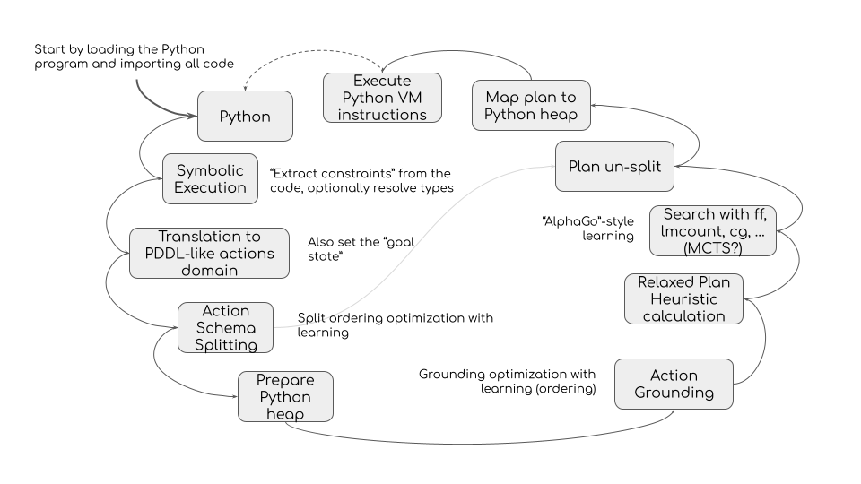

Principles of HyperC
HyperC is loading the code as constraints as opposed to loading instructions. This allows advanced processing of logic, working with non-deterministic programs, and higher levels of ambiguity than a typical compiler or interpreter can offer.
Gradual Logic Grounding
Directly processing high-level logic of Python code and higher-level logic of database schemas is a challenging task. So HyperC takes the approach of spliting the problem into “layers” that are easier to address efficiently. Eventually, HyperC will process select grounded states to resolve remaining ambiguity with a heuristically guided grounded planner.
The layers include:
- Interpreting database schema and generating Python code (e.g. interpreting unique constraints of distinct rows as mutual object inequalities with objects representing each row)
- Interpreting universal constraints into Python code (like all items that match criteria must have value True)
- Interpreting variable identity (same type variables in Python code may end up referring to same objects)
- Symbolic execution of Python functions to create stacks for every branch (given a concrete identity branch)
- Resolving other Python ambiguities like attributes with no initial value (given every branch of sym-ex)
(at this point we have first-order logic actions in STRIPS-like terms) - Optimizing action schema (first-order logic and triples facts) - various proofs, splitting, etc.
- Full grounding of selected states in delete-relaxed space of SAS domain (where all variables are resolved to concrete states and specific objects)
- Resolving final ambiguities by finding an execution plan within grounded states using a grounded planner.
The challenge is to apply as many optimizations as possible at every layer, including applying various machine learning techniques.
Recursive Planning
Any problem can be represented as a planning problem. Including the planning problem itself.
So HyperC takes advantage of a decomposed planning problem to decompose even further.
For example, modern approach to automatic proof includes various AI planning techniques. HyperC has a fully functional metaplanner - the implementation of PDDL planner in terms of HyperC Python (only the problem of planning is defined, not the actual algorithms)
Components
HyperC Planning Database consists of:
- hyperc Python module: implements core logic of sumbolic execution of Python
- hyper-etable module is responsible for interpreting the data schemas into Python code
- postgresql proxy manages database connections and adds rewriters for TRANSIT* queries
- PostgreSQL database implements standards-compatible interfaces, process and lock management
Learning
Architecture Diagram
